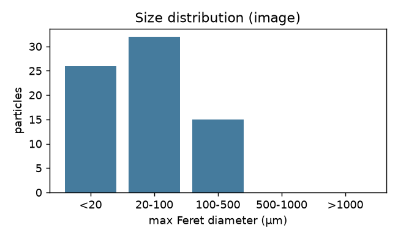
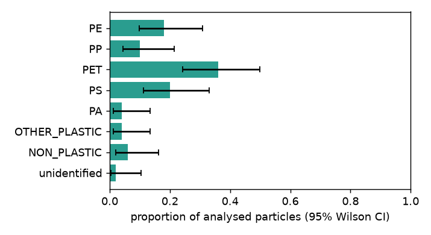
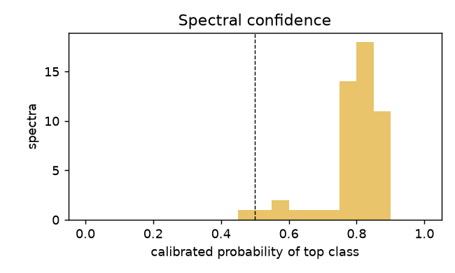

Overall confidence: Medium (rule: the lowest of image High, spectral Medium, sample-size cap High)
| id | sample_002 |
|---|---|
| location | (demo) tap water, constructed |
| date | 2026-01-01 (placeholder) |
| volume_filtered_L | 2.0 |
| pore_size_um | 1.0 |
| um_per_pixel | 2.0 |
| image_is_synthetic | True |
| spectra_are_constructed_demo | True |
| image_source | data/images_synthetic/SYNTH_0035.png |
| spectra analysed | 50 |
| abstain threshold | 0.5 |
73 particles detected; median size 38 µm (D10 11, D90 166; max Feret diameter). Concentration: 36 particles/L (count ÷ volume filtered). Image confidence: High

Shape counts: {'fragment': 55, 'fibre': 17, 'film': 1}


| class | spectra | proportion | 95% CI | expected particles on filter* |
|---|---|---|---|---|
| PE | 9 | 0.18 | 0.10–0.31 | 13.1 (7.1–22.5) |
| PP | 5 | 0.10 | 0.04–0.21 | 7.3 (3.2–15.6) |
| PET | 18 | 0.36 | 0.24–0.50 | 26.3 (17.6–36.4) |
| PS | 10 | 0.20 | 0.11–0.33 | 14.6 (8.2–24.1) |
| PA | 2 | 0.04 | 0.01–0.13 | 2.9 (0.8–9.8) |
| OTHER_PLASTIC | 2 | 0.04 | 0.01–0.13 | 2.9 (0.8–9.8) |
| NON_PLASTIC | 3 | 0.06 | 0.02–0.16 | 4.4 (1.5–11.8) |
| unidentified | 1 | 0.02 | 0.00–0.10 | 1.5 (0.3–7.7) |
* Extrapolation assumes the analysed spectra are a random subsample of all particles on the filter. Spectral score 0.78 → Medium